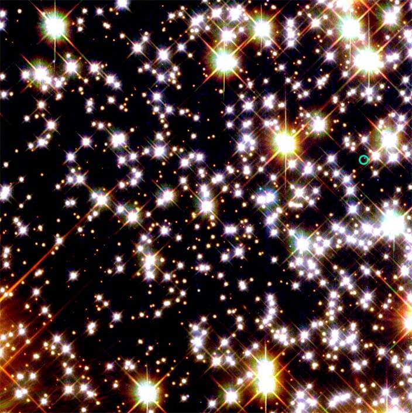
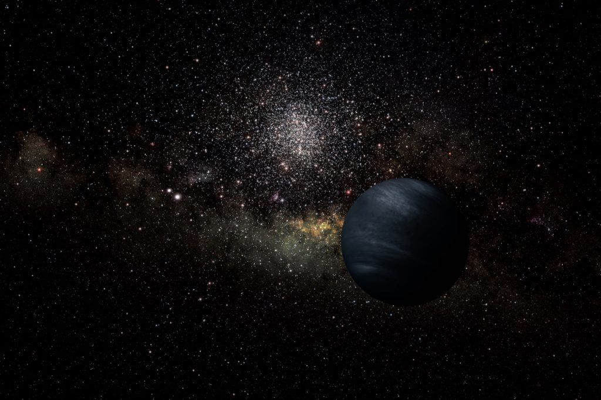

ကမ္ဘာမြေကနေ အလင်းနှစ် ၅,၆၀၀ လောက် ဝေးတဲ့နေရာမှာ ရှိတဲ့ ရှေးဟောင်း ကြယ်တွေ စုနေတဲ့ နေရာတစ်ခု ရှိပါတယ်။ အဲ့သည်ထဲက ကြယ်ဖြူပု နဲ့ နယူထရွန်ကြယ် စုံတွဲ (White Dwarf – neutron star binary system) တစ်ခုကို ပတ်နေတဲ့ ဂြိုဟ်တစ်စင်းရဲ့ ဂုဏ်သတ္တိတွေကို ၂၀၀၃ ခုနှစ်ကတဲက နက္ခတ်ပညာရှင်တွေ လေ့လာနေခဲ့ ကြတာပါ။ ဒီလို လေ့လာဖို့ နာဆာက လွှင့်တင်ထားတဲ့ Hubble Space Telescope ဟတ်ဘယ်လ် မှန်ပြောင်းကြီးကို သုံးခဲ့ကြတာပါ။
အခုတော့ ဒီ ဂြိုဟ်ကြီးရဲ့ သက်တမ်းကို အတိအကျ သိရပါပြီ။ ဒိဂြိုဟ်ကြီးဟာ သက်တမ်း ၁၃ ဘီလီယံ ရှိပါပြီ။ ကျွန်တော်တို့ ကမ္ဘာ သက်တမ်း ၄.၅ ဘီလီယမ်နဲ့ ယှဉ်ရင် တကယ်ကို အိုမင်းနေပါပြီ။
ဆက်စပ်ဆောင်းပါး – အလင်းနှစ် ဆိုတာ ဘာလဲ
Big Bang ကြီးဖြစ်ပြီး နှစ်သန်း ၁,၀၀၀ မှာ မွေးဖွားခဲ့
ဒီ ဂြိုလ်ကြီးပေါ်မှာ သက်ရှိတို့ ရှိနေမယ် မနေဘူး ဆိုတာကတော့ မေးစရာကို မလိုတဲ့ မေးခွန်း ဖြစ်ပါတယ်။ ဒီဂြိုလ်ကြီးဟာ သက်တမ်းကုန်ဆုံး နေပြီဖြစ်တဲ့ ကြယ်အိုကြယ်ဆွေးကြီး စုံတွဲကို ပတ်နေတာ ဖြစ်ပါတယ်။ သူ့အနီးအနား ပါတ်ဝန်းကျင်က ကြယ်တွေထဲမှာ အသက်ဇီဝ ရှင်သန်နိုင်ဖို့ လိုအပ်တဲ့ သတ္တုဓါတ်တွေလဲ အရမ်းကို နည်းပါးလွန်းလှပါတယ်။
ဒီဂြိုလ်ကြီးက အရွယ်အစားတင် ကြာသပတေးဂြိုလ်နဲ့ နီးစပ်တာ မဟုတ်ပါဘူး။ ဖွဲ့စည်းပုံကလဲ ကြာသပတေးဂြိုလ်နဲ့ ခပ်ဆင်ဆင် တူပါသေးတယ်။ သူ့မှာ မာကျောတဲ့ မျက်နှာပြင်လဲ မရှိပါဘူး။ ပြီးတော့ ဆူပါနိုဗာ ပေါက်ကွဲ မှုကြီး တစ်ခုနဲ့လဲ ကြုံတွေ့ခဲ့ရ ဖူးဟန် တူပါတယ်။ သူပတ်နေတဲ့ ကြယ်စုံတွဲ ထဲက နျူထရွန် ကြယ်ဟာ ဒီ ဆူပါနိုဗာ ပေါက်ကွဲမှုကြီး အပြီး ကြွင်းကျန်ရစ် ခဲ့တဲ့ အကြွင်းအကျန် ဖြစ်ဖို့ များပါတယ်။ ဒီတော့ အရင်က သက်ရှိတွေ ရှိခဲ့မယ် ဆိုရင်တောင် အခုတော့ ရှိနိင်တော့မှာ မဟုတ်ပါဘူး။
Globular Cluster ကြယ်စု
ဒီဂြိုလ် ရှိနေတဲ့ အရပ် ဒေသဟာ မစ်ကီးဝေး ဂလက်ဆီ ထဲမှာတော့ အတော်လေး ထူးခြားတဲ့ အရပ်ဒေသ ဖြစ်ပါတယ်။ သူက မစ်ကီးဝေး ဂလက်ဆီရဲ့ လက်တံပေါ်မှာ ရှိနေတာ မဟုတ်ပါဘူး။ မစ်ကီးဝေး ဂလက်ဆီကို ကြည့်ရင် ခပ်ပြားပြား ဖြစ်နေပြီး ဘေးကို ခရုပတ်ကို လက်တံတွေ ထွက်နေတာ တွေ့ရမှာပါ။ ဒီလက်တံတွေ အပြင်ဖက်က ကြယ်တွေ သိပ်မရှိတဲ့ နေရာကိုတော့ Halo of the galaxy လို့ ခေါ်ပါတယ်။ဒီအရပ်က ကြယ်တွေ ပါးတယ် ဆိုပေမယ့် ဟိုနားစုစု ဒီနားစုစု ကြယ်စုလေးတွေ တွေ့ရမှာ ဖြစ်ပါတယ်။ အဲ့သည် ကြယ်စုသေးသေး လေးတွေကိုတော့ Globular Cluster (ကြယ်စုလုံး) လို့ ခေါ်ပါတယ်။ အခုကျွန်တော်တို့ ပြောနေတဲ့ ဂြိုလ်က အဲ့သည် Globular Cluster တစ်ခုထဲမှာ ရှိနေတာပါ။ အတိအကျ ပြောရရင် M4 ဆိုတဲ့ Globular Cluster ထဲမှာပါ။
ဒီ M4 cluster က အလင်းနှစ် ၁၀၀ လောက်ပဲ အကျယ်ရှိတာပါ။ ဒါပေမယ့် ဒီနေရာ စုစုလေးမှာ ကြယ်အလုံးပေါင်း တစ်သန်း လောက်တောင် ရှိနေတာပါ။ အကယ်လို့သာ ဒီကြယ်စုထဲက ကြယ်တွေပေါ်မှာသာ သိဉာဏ် မြင့်မားတဲ့ သက်ရှိတွေ ဖြစ်ထွန်းခဲ့မယ် ဆိုရင် ဒီ သက်ရှိတွေဟာ အချင်းချင်း ဆက်သွယ်မှု ပြုနိုင်ကြမှာ အသေအခြာပါပဲ။ ကြယ်တွေ တစ်စင်းနဲ့ တစ်စင်းကြား ခရီးသွားဖို့ ဆိုတာလဲ ဒီလိုနေရာမျိုးမှာသာ ဖြစ်နိုင်မယ့် ကိစ္စပါ။

တစ်ခါပတ်ဖို့ရာစုနှစ်တစ်ခုကြာတယ်
အခု Hubble Telescope နက္ခတ်ကြည့် မှန်ပြောင်းရဲ့ တွေ့ရှိချက်တွေဟာ ဆယ်စုနှစ် တစ်စုစာလောက် ပညာရှင်တွေ အကြားမှာ အငြင်းပွားနေခဲ့တဲ့ ဒီဂြိုလ်ကြီးနဲ့ ပါတ်သက်တဲ့ မေးခွန်းတွေကို အဖြေပေးလိုက်တာပဲ ဖြစ်ပါတယ်။ ဒီဂြိုလ်ကြီးဟာ သူပတ်နေတဲ့ နေကို တစ်ပတ်ပြည့်အောင် ပတ်မိိဖို့ နှစ် တစ်ရာလောက် ကြာပါတယ်။ သူ့ရဲ့ ဒြပ်ထုဟာ နေအဖွဲ့အစည်းမှာ အကြီးဆုံး ဖြစ်တဲ့ ကြာသပတေးဂြိုလ်ရဲ့ ၂ ဆ ခွဲလောက် ရှိပါတယ်။ ဒီဂြိုလ်ဟာ စကြာဝဠာ စတင်တဲ့ Big Bang ကြီး ပြီးနောက် နှစ် သန်း ၁၀၀၀ လောက်ပဲ ကြာတဲ့အချိန်မှာ ဖြစ်လာတာ ဖြစ်ပါတယ်။ ဒီလောက် စောစော ကတဲက ဂြိုလ်တွေ ဖြစ်လာတာမို့ စကြာဝဠာထဲမှာ ဂြိုလ်တွေ အများကြီး ရှိနေမယ်လို့ သိပ္ပံပညာရှင်တွေက ကောက်ချက်ဆွဲကြပါတယ်။“ဒီ Hubble telescope ရဲ့ တွေ့ရှိချက်က ဘာကို ပြနေလဲ ဆိုတော့ စကြာဝဠာရဲ့ အစောပိုင်းကာလ heavy elements ခေါ်တဲ့ လေးလံတဲ့ ဒြပ်စင်တွေ သိပ်အများကြီး မရှိခင် ကတဲက ရှိတာသုံးပြီး ဂြိုလ်တွေ ဖြစ်လာနိင်တယ် ဆိုတာပဲ ဖြစ်ပါတယ်။ ဒီအချက်ကို ကြည့်ရင် ဂြိုလ်တွေဟာ (ကျွန်တော်တို့ ထင်ထားခဲ့တာထက်ကို) ပိုပြီး အစောကြီး ကတဲက ဖြစ်ပေါ်လာနေကြတယ် ဆိုတာ ထင်ရှားပါတယ်” လို့ Pennsylvania State University က သုတေသန ပညာရှင် စတန်း ဆစ်ဂါဆန် (Steinn Sigurdsson) ကပြောပါတယ်။
“ဂြိုလ်တွေ ဖြစ်လာတဲ့ ဖြစ်စဉ်မှာ သူတို့နားမှာ ရှိတဲ့ ဒြပ်စင်တွေကို အလွန်ပဲ အကျိုးရှိစွာ အသုံးချပြီး ဂြိုလ်တွေ ဖန်တီးနိုင်ကြပါတယ်။ သတ္တုတွေ အများကြီး ရှိနေတဲ့ ကြယ်တွေဟာ ဂြိုလ်တွေကို ဖန်းတီးနိုင်သလို သတ္တုတွေ သိပ်မရှိတဲ့ ကြယ်တွေကလဲ ရှိတာလေးကို အကျိုးရှိရှိ အသုံးချပြီး ရအောင် ဂြိုလ်တွေ ဖန်တီးနိုင်ကြပါတယ်။ “ လို့ သူက ဆက်ပြောပါတယ်။

Globular Clusters ထဲမှာဂြိုလ်တွေအများကြီးရှိတယ်
ကနေဒါနိုင်ငံ Vancouver မြို့ University of British Columbia က သုတေသီ Harvey Richer ကတော့ ဒီလို ပြောပါတယ်။ “အခုတွေ့ရှိချက်ဟာ ဘာကိုပြနေလဲ ဆိုတော့ globular star clusters တွေထဲမှာ ဂြိုလ်တွေ အများကြီး ရှိနေတယ် ဆိုတာပါပဲ။” သူက သူ့ယူဆချက်ကို ဘယ်အပေါ်မှာ အခြေခံတာလဲ ဆိုတော့ အခုလို မထင်မှတ် ထားတဲ့ နေရာမှာ အရမ်း အသက်ကြီးနေပြီ ဖြစ်တဲ့ ဂြိုလ်ကြီး တစ်စင်းကို ရှာဖွေတွေ့ရှိ ခဲ့တာကို အခြေခံတာပဲ ဖြစ်ပါတယ်။ အခုဂြိလ်တွေ့တဲ့ နေရာကလဲ အနားမှာ ကြယ်တွေ ပြွတ်သိပ်နေတဲ့ နေရာလေ။ ဒီတော့ အကယ်လို့သာ ဖြစ်လာတဲ့ နေအဖွဲ့အစည်းက သိပ်အားမကောင်းဖူး ဆိုရင် သူ့ပတ်ဝန်းကျင်က ကပ်နေတဲ့ ကြယ်တွေက ဒီနေအဖွဲ့အစည်းကို တစ်စစီ ဆွဲဖြဲပစ်လိုက်မှာပဲ ဖြစ်ပါတယ်။အခုတွေ့ရှိချက်ကြောင့် ဒီဂြိုလ်နဲ့ ပါတ်သက်လို့ အငြင်းပွား နေတာတွေလဲ တိတ်သွားပါတယ်။ ဒီ့အရင် မတိုင်မီက ဒါကို ဂြိုလ်ကြီး တစ်ခု ဖြစ်တယ် ဆိုတာကိုတောင် သေချာ မသိကြပါဘူး။ အခုတော့ ဂြိုလ်ဖြစ်မှန်း သေချာသွားပါပြီ။
Reference: Almost Three Times as Old as Earth – Oldest Planet in Our Milky Way Galaxy